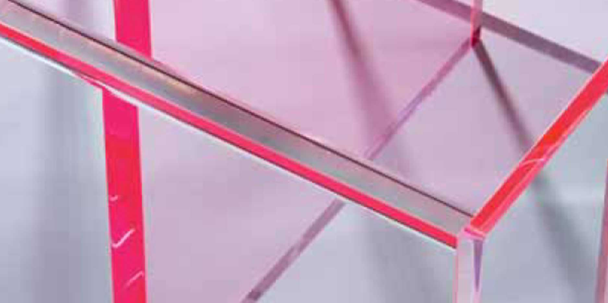
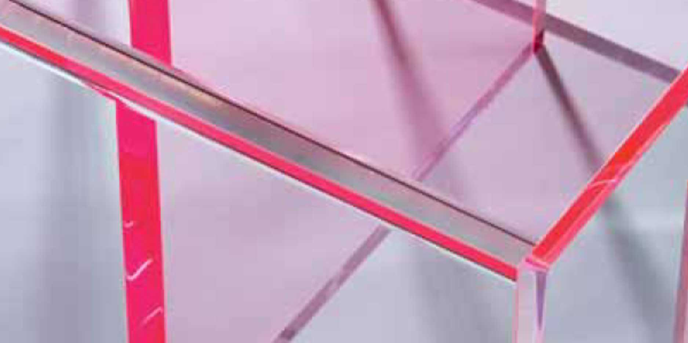

Обработка стекла
Обработка стекла
 Продукция из стекла
Продукция из стекла
 Обработка оргстекла

Продукция из оргстекла
Обработка оргстекла

Продукция из оргстекла
 Прочее
Прочее
SAMELGO+
GEMY 8 BAVELLONI
Gemy 8 — прямолинейный вертикальный автоматический станок с 8-ю чашечными кругами для обработки плоской кромки с фасками на листовом стекле или зеркале толщиной от 3 до 19 мм. Gemy 8 спроектирован и изготовлен по самым современным технологиям и способен шлифовать и полировать кромку и фаски стекла с высоким качеством и производительностью.
MAX 80 BAVELLONI
MAX 80 – фацетная машина с ЧПУ с 13 чашечными кругами, предназначенная для больших объемов производства и отвечающая высоким требованиям к качеству продукции. Это самая совершенная модель в нашем ряде фацетных машин. Обрабатываема толщина 3-25 мм, минимальная обрабатываемая высота (полос) 35 мм, минимальные обрабатываемые размеры 40x40 мм, максимальная ширина фацета 60 мм
SB 10 BAVELLONI
SB 10 - горизонтальная машина для изготовления фацета и обработки кромок фасонных изделий средней и большой толщины в ручном и полуавтоматическом режимах. Толщина заготовки 3-40 мм, минимальный и максимальный размеры заготовки при изготовлении фацета 230–2100 мм, максимальная ширина фацета 40 мм
VT 1250A - СТАНОК ДЛЯ СВЕРЛЕНИЯ СТЕКЛА
VT 1250A – удобная в эксплуатации сверлильная машина с двойной головкой. Подъем нижней головки и сверление осуществляются автоматически. Опускание верхней головки можно производить вручную с помощью рычага или автоматически посредством пневматического цилиндра с гидравлическим тормозом. Максимальная толщина заготовки при сверлении обеими головками 3-25 мм, минимальный размер заготовки 100 x 100 мм, диаметр отверстия при сверлении обеими головками 4 –130 мм

MTS-45 BAVELLONI
MTS-45 - лидер сектора наклоняемых столов резки: c превосходной механической конструкцией, может достигать непревзойденных технических характеристик, благодаря легкому, но прочному мосту, приводимому в движение посредством электрической оси (система Gantry) и оснащенному головкой, приспособленной для резки стекла толщиной до 25 мм и использованию ролика любого типа.
MASTER 35 INTERMAC
Master 35 - представляют собой последнюю ступень развития в ряду обрабатывающих центров с пятью цифровыми интерполированными осями. Данная модель объединяют качество, традиционно ассоциирующееся с маркой «Intermac», и способностью исполнять все более разнообразные типы обработки, обеспечивая точность, производительность и высокие стандарты качества продукции. Максимальные размеры обрабатываемой заготовки - 3250x1620 мм. Обрабатывающий центр с Master 35 Glass служит для обработки кромки (внутренней и внешней), фрезерования, двустороннего сверления, фацета, гравирования, сканирования шаблонов.
MISTRAL 120V
MISTRAL 120V - установка спроектирована для пескоструйной обработки плоского стекла толщиной до 30 мм в автоматическом или в ручном режиме. Панель управления, оборудованная клавиатурой и цифровым дисплеем для легкого и быстрого программирования параметров. Система позволяет устанавливать и регулировать (в автоматическом режиме) вертикальное движение пескоструйного пистолета скорость автоматического пистолета размеры листа стекла для пескоструйной обработки
BUSETTI F11
Busetti F11 – это идеальное решение для обработки плоской еврокромки с фасками или профилем с углом в 45⁰. Станки предназначены для предприятий, которые желают увеличить свою производительность путем приобретения надежного станка с модульной конструкцией, что позволяет предложить клиентам индивидуальное решение со всеми преимуществами современных технологий.